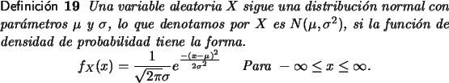
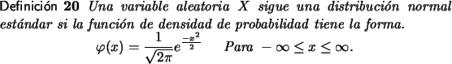
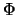

La distribución Normal
En general las distribuciones de probabilidad son herramientas muy necesarias en el estudio de problemas probabilísticos y estadísticos.
Entre las distribuciones de probabilidad continuas, la distribución normal, es la más utilizada y la más importante.
Muchas mediciones dentro de poblaciones siguen distribuciones normales y en casos donde poblaciones no distribuyen normalmente, es común que ciertos promedios y ciertos valores acumulados se distribuyan en forma normal, esta última observación se conoce como el teorema del límite central.
En términos muy simples, una población sigue una distribución normal respecto a alguna medición cuando el grueso de los valores de la población se distribuyen cerca de la media y existe cierta simetría en la forma en que se distribuyen los datos alrededor de la media.
En términos matemáticos la definición es la siguiente:

Se puede demostrar que la media de esta distribución es  y
la desviación es .
y
la desviación es .
En la siguiente aplicaciones usted puede explorar la forma de la gráficas de distribuciones normales. Se puede variar la media y la desviación estándar para analizar distintos casos.
Además la distribución de probabilidad acumulada es decir,
P[X  x] se calcula por la integral:
x] se calcula por la integral:
Para efectos operacionales, las distribuciones normales son difíciles pues los cálculos que deben hacerse son complejos.
Entre las normales, la distribución más importante es la que se llama normal estándar, una normal cuya media es 0 y cuya desviación estándar es 1. De hecho en estas mismas notas veremos que toda probabilidad que implique la distribución normal puede reducirse a una en que se utilice la normal estándar.

Y en este caso el cálculo de la distribución de probabilidad acumulada es,
La última expresión es una variante de una función que se conoce como la función error erf(x), [1], y solo hay formas numéricas de aproximar sus valores [3,2].
Los valores de la función (x) se pueden obtener en tablas que aparecen en libros de probabilidades o bien utilizando la herramienta provista en estas notas.